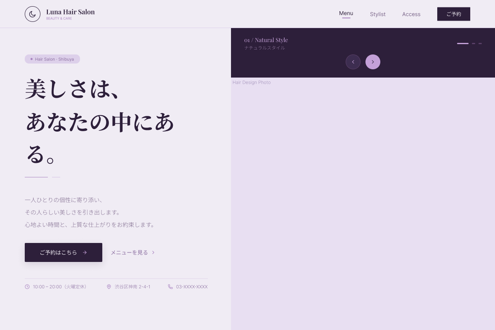

Works Detail
Hair Salon Website
Luna Hair Salon
清潔感とやわらかさを大切にした、美容室のWebサイトです。

Overview
清潔感のある美容室をイメージして制作した架空サイトです。 サロンの雰囲気やメニュー、予約までの流れが分かりやすく伝わるよう設計しました。
使用技術
HTML / CSS / JavaScript
制作期間
約1週間
担当範囲
デザイン / コーディング
工夫した点
初めて訪れる方でも安心して見られるよう、余白を広めに取り、やわらかい印象の配色にしました。 予約までの導線が分かりやすくなるよう意識しています。
苦労した点
メニューやスタッフ情報を見やすく整理する点に苦労しました。 情報量が多くなりすぎないよう、シンプルな構成に整えました。